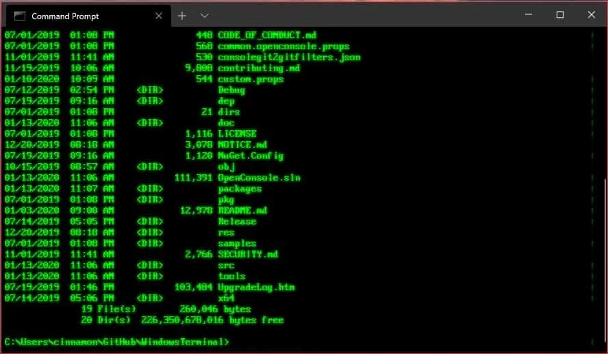
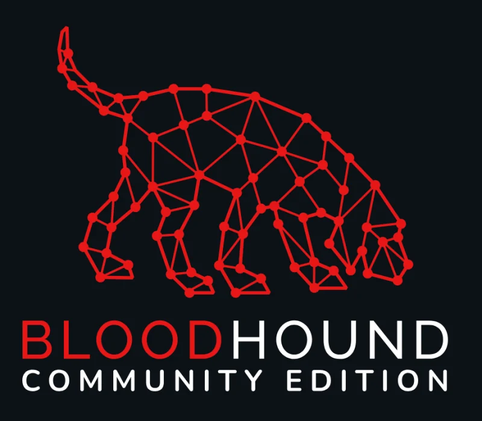
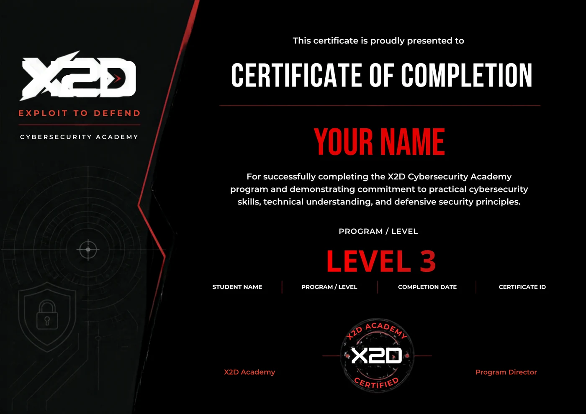

Intercepting and testing HTTP traffic
You intercept the request, modify it, and test how the application behaves.
X2D is a live academy on Discord. In 26 weeks you go from zero to a complete Penetration Testing report, and you graduate with an X2D certificate that anyone can verify by scanning its QR code.
Intercepting and testing HTTP traffic
You intercept the request, modify it, and test how the application behaves.

Enumeration and command-line workflow
From Level 1 all the way to privilege escalation, the work happens in the terminal.
Understanding network traffic
You read the packets and understand what is really happening on the network.

Mapping attack paths in Active Directory
You find the shortest path to Domain Admin on the graph.
These aren't promises. These are the real deliverables in the curriculum, picked from every phase.
Linux from the terminal. 10 tasks in under 25 minutes.
A Scavenger hunt, and two rooms on TryHackMe.
Subnetting by hand, up to VLSM. 15 problems.
You need 80% to move on to the following week.
Analyze a .pcap file in Wireshark: identify the protocols and what happened.
Written answers to 8–10 questions.
Nmap and Service Enumeration on a specific target.
An Enumeration report: every port, service, and version, and why it matters.
Manual SQL Injection first, then sqlmap on DVWA or Juice Shop.
A Writeup with one manual finding and one found with sqlmap.
Windows Privilege Escalation with WinPEAS and PowerUp.
The full chain, from the initial foothold to administrator.
Active Directory: Kerberoasting and Pass-the-Hash all the way to Domain Admin.
A compromise chain report, with every step documented.
Capstone: an environment with 2 or 3 chained machines, under a time limit.
A professional Pentest report.
A simulated Engagement through to the final report: two weeks of independent work.
The report you graduate with.
Many cybersecurity courses stay theoretical, and you finish having memorized tool names without running a single attack. Here it's the opposite: every week has a Lab and a deliverable, every level ends with a practical exam, and the finish line is proof you can hand to an employer.
The instructor teaches from their own Penetration Testing experience, and shows you the mistakes they made themselves so you don't repeat them. It's not a copy of another course.
A steady rhythm: two live sessions, hands-on work in between, and a deliverable at the end.
A new concept, applied in front of you on the terminal or the VM.
Specific tasks on TryHackMe or Hack The Box, with the instructor available on Discord.
Deeper application, and the week's questions solved on screen.
A report, writeup, or script, with a clear deadline known from day one.
On Discord with voice and screen sharing. You ask, and you get the answer right then.
TryHackMe first, then Hack The Box, then CyberTalents. No “go try it on your own.”
Support on Discord all week long, not just during the session.
You have to pass it to unlock the next level. If you don't, we pinpoint exactly where you're stuck.
So the attention stays personal.
Cheat sheets, templates, and the steps of every session on Notion.
Every level ends with a practical exam. The length on the bar is the actual time each phase takes.
You get comfortable on Linux and Windows from the terminal, and write small scripts.
Practical CheckpointYou do subnetting by hand and read the traffic in Wireshark.
Practical CheckpointYou run a full Pentest from recon to report, including Web and Active Directory.
Capstone CheckpointIndependent work in a near-real environment, finishing with a complete Pentest report. Your certificate is issued once you complete it.
GraduationReal tool names and concepts, exactly as you'll find them on the job.
You get comfortable on Linux and Windows, and understand the network before you attack it.
Linux CLI · PowerShell · Subnetting · WiresharkYou gather information about the target before touching anything.
theHarvester · Recon-ng · Amass · ShodanYou know every service running on the target, and why it matters.
Nmap · NSE · enum4linux · gobusterYou turn a CVE into a working exploit, and understand what happens underneath.
Metasploit · Exploit-DB · CVE / NVDThe web vulnerabilities that show up in every assessment, manual first and then with tools.
Burp Suite · SQLi · XSS · IDOR · File UploadFrom a weak shell to root or administrator, on Windows and Linux.
WinPEAS · LinPEAS · PowerUp · GTFOBinsThe most common target in real work. You understand Kerberos and walk the attack path.
BloodHound · Kerberoasting · Pass-the-Hash · MimikatzYou tell hash types apart and crack them methodically, not by guessing.
Hashcat · John the Ripper · cewl · password sprayingYou move from a compromised machine to an internal one that isn't visible from outside.
proxychains · SSH tunnelingYou write a finding that both the manager and the technical reader can understand in the same file.
CVSS · Executive Summary · RemediationI'll show you the mistakes I made early on, so you don't waste your time falling into the same traps.
Program instructor
The Portfolio Phase is two weeks of independent work in a near-real environment, with the instructor checking in periodically. What you leave with is a complete Penetration Test report in the same format delivered to a client, which you can show in any interview.
An attacker on the internet can sign in as any user without knowing a password.
The username value is inserted into a database query without sanitization, so its input can change the meaning of the query.
Use parameterized queries (prepared statements) and validate input on the server.
Every X2D certificate has its own ID and a QR code. Scan it, and the X2D verification page confirms the certificate is real and shows what's behind it.
An X2D Academy certificate of completion, earned by finishing the full 26-week track and passing the practical exams. It is not a vendor certification such as CompTIA or OSCP.

You pay per level. The total is EGP 9,000 for the full track, including the Portfolio Phase and your certificate.
Nothing is hidden. If your question isn't here, contact us.
We'll talk about your level and your goal, and tell you honestly whether the program is right for you or not. The cohort is limited to 20 students.
We'll get in touch on the number you gave us to talk about your level and your goal.